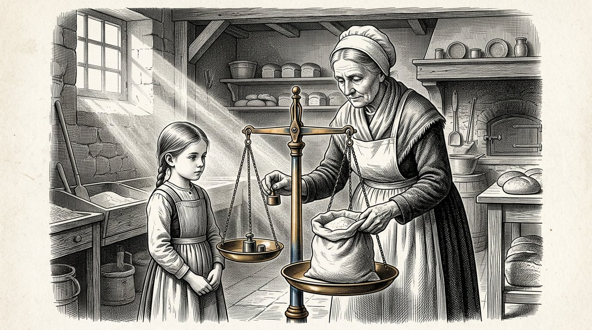
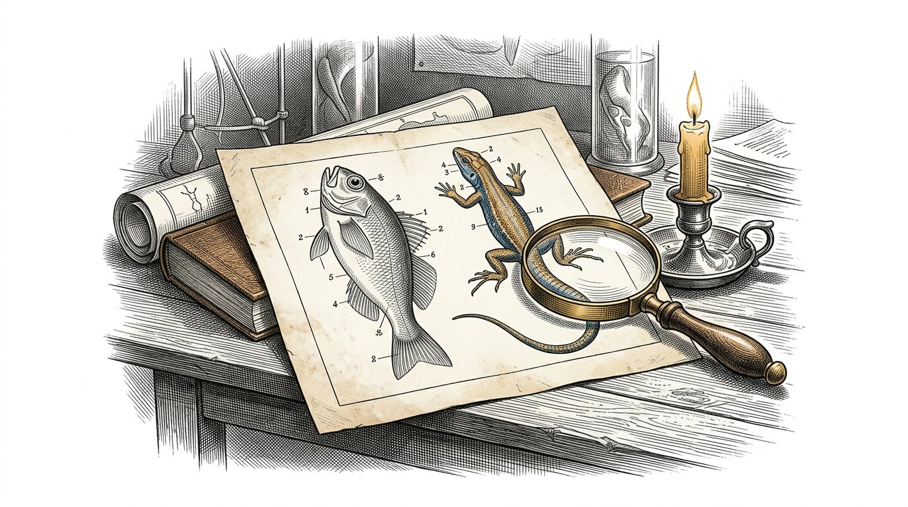
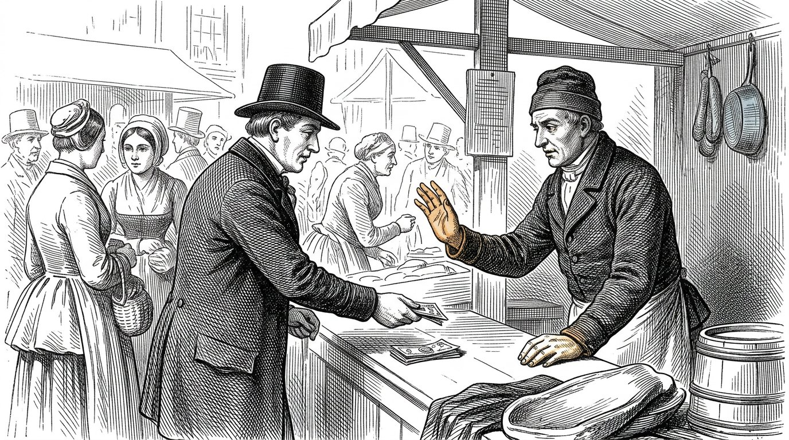
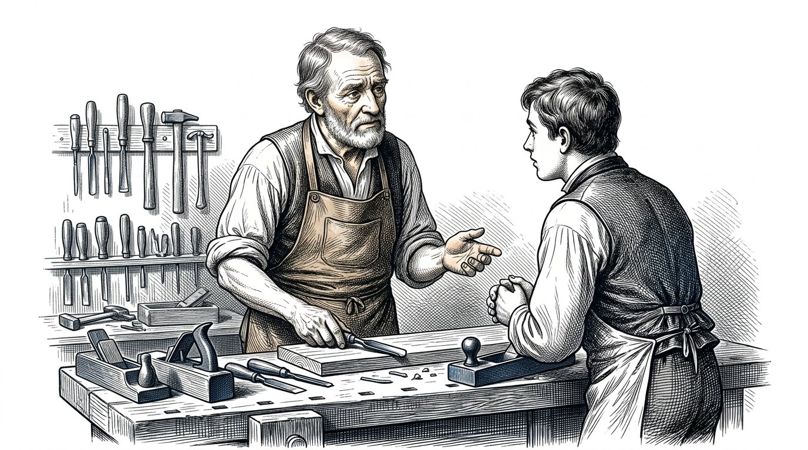
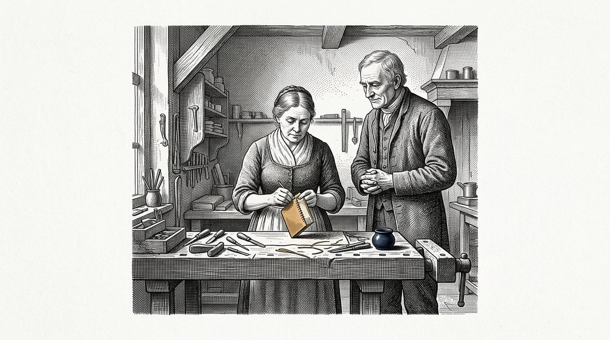
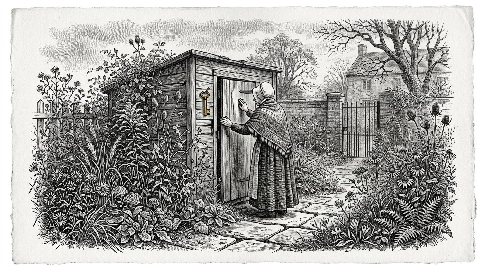

De Kosaris
BOEK DRIE
Het boek van Anthea

De Kosaris
Het boek van Anthea
Dit is het derde boek van de Kosaris en het is niet door mij begonnen.
Het begint met veertien pagina’s die ik heb geschreven toen ik twintig was, over mijn grootmoeder Demira en over de oude man die op donderdag in de bakkerij kwam. Ik heb ze in een la gelegd en ik heb ze tweeënvijftig jaar niet aangeraakt. Toen ik ze terugvond, vond ik ze te zeker. Ik heb er niets aan veranderd. Ik heb er één zin onder gezet en de datum erbij.
Het eerste boek gaat over de vier zuilen. Het tweede boek gaat over het onderscheid tussen wat vaststaat en wat is aangenomen. Dit boek gaat over de vraag die daaronder ligt: hoe wordt een mens zo grootgebracht dat hij dat kan dragen.
Een mens is geen enkelvoudig wezen. Hij is een stapeling van lagen, in de volgorde waarin zij zijn ontstaan, en elke laag kan alleen ontstaan wanneer de laag eronder gestold is. Dit boek volgt die volgorde en slaat niets over.
Zeven dagen. Zolang duurt het voordat het eitje weet dat het verder gaat. Er komt in die dagen niets binnen. Er wordt alleen vorm gemaakt.
Zeven maanden. De reptiel. Het kind leeft in twee dimensies. Dat is geen beeldspraak: een vis en een hagedis hebben hun ogen opzij en zien rondom, maar hun twee ogen werken niet samen en er is geen diepte. Plat en alles tegelijk. In die maanden leert het kind zijn levensfuncties zelfstandig besturen: ademen, warm blijven, gevaar vermijden. Geen binding, geen empathie, geen zelfherkenning — wel intact en betrouwbaar op zijn eigen niveau. Na zeven maanden is die laag af, en toch wordt een kind meestal pas rond de negende maand geboren. In die twee maanden komt er niets nieuws bij. De laag wordt vast. Een laag is niet klaar wanneer zij werkt; zij is klaar wanneer zij het volhoudt.
Zeven jaar. De zoogdier. De ogen komen naar voren staan, de twee beelden gaan samenwerken en daaruit ontstaat diepte — de derde dimensie. En met de diepte komt het gevoel. Het stolt niet als regel en niet als kennis, maar als geleefde vanzelfsprekendheid, en het stolt alleen bij één aanwezige mens die er jarenlang is. Wat hier niet stolt, stolt later nergens meer.
Wat er in die zeven jaar nog niet bij hoort, is de tijd. Een zoogdier heeft tijdreflexen — een ritme dat terugkomt, een honger op een vast uur, een hond die op tijd bij de deur staat — maar hij kan niet plannen. Hij kan niet weten dat morgen anders zal zijn. Daarom horen die zeven jaar zonder tijdsbesef te verlopen: geen klok, geen kalender, geen straks, geen doel over vijf jaar. Wat er in die jaren moet worden aangelegd is een reflexondergrond zonder tijd, en die komt er alleen als wij de tijd erbuiten houden.
Daarna de mens. Nu pas komt de vierde dimensie erbij: de tijd. Het kind kan vooruit denken naar een dag die er nog niet is en er nu al iets voor doen. Vanaf dat ogenblik mag alles erin wat wij zeven jaar hebben weggehouden, en het komt er makkelijk in, want er is iets om het op te leggen. Gevoel en verstand lopen dan naast elkaar, tot veertien en tot eenentwintig. Op veertien gaat het vermogen open om naar het eigen denken te kijken. Op eenentwintig kan het verstand het overnemen — maar alleen voor zover er genoeg gevoelsbasis onder zit om het te dragen.
Maar een mens heeft meer dan vier richtingen. Er zijn er zeven: de drie van de ruimte, de tijd, en dan nog grootte, waarde en aantal. Grootte is weten hoe groot iets is en niet alleen kunnen uitrekenen hoe groot iets is. Waarde is wat iets waard is, los van of iemand het meet. Aantal is kunnen voelen dat één geval nog niets is en dat duizend gevallen iets zijn.
Die laatste drie worden in onze scholing niet aangelegd. Zij worden weggenomen. Een school brengt alles terug tot één maat, zij noemt waarde wat op het rapport past, en zij leert rekenen met getallen zonder er ooit een gevoel bij te geven. Een kind komt eruit met vier richtingen en denkt dat dat alles is.
Die laatste voorwaarde is de reden dat dit boek bestaat. Een verstand zonder gevoelsbasis eronder neemt niet over. Het beweegt mee met wie het laatst tegen hem sprak.
Tegenwoordig ligt de tweede lijn ver later in het leven, en bij velen komt zij niet. Dat is niet omdat men minder leert. Het is omdat men de jaren waarin een mens hoort mis te grijpen heeft volgezet met leren, en omdat de gevoelsbasis ontbreekt waarop het misgrijpen kan aankomen. Wie te weinig fouten heeft gemaakt, heeft niets om op te oordelen.
Zevenenzeventig. Dat is geen leeftijd waarop een mens iets leert. Het is de tijd die eroverheen gaat voordat wat één mens heeft geleerd, terugkomt in iemand die hem niet heeft gekend.
Ik ben verpleegster geweest, zesenveertig jaar. Ik heb honderdnegentien kinderen zien geboren worden en ik heb er geen enkel opgevoed. Dat is een tekort in dit boek en ik zeg het liever vooraf dan dat iemand het achteraf ontdekt.
Waar ik iets niet weet, staat dat er.
Deel 1

Waarin staat wat Anthea op haar twintigste opschreef over haar grootmoeder en over de oude man, en wat zij er tweeënvijftig jaar later onder zette.

Ik zag kleuren rond mensen. Dat heb ik lang tegen niemand gezegd, want mijn moeder werd er ongerust van en mijn grootmoeder niet, en het was makkelijker om bij mijn grootmoeder te zijn.
Ik weet niet wat het was. Ik heb er later voor gestudeerd en ik heb er nooit een naam voor gevonden die klopte. De artsen hebben er namen voor en die namen dekken het niet.
Wat ik wel weet, is wanneer het weg is gegaan. Het is weg gegaan toen ik veertien was, in de winter dat mijn grootvader stierf, en het is nooit teruggekomen.
Ik heb daar dertig jaar verdriet van gehad.
Nu ben ik oud en nu denk ik er anders over. Ik denk niet meer dat ik iets ben kwijtgeraakt. Ik denk dat er iets bovenop is gekomen.
Er kwam iets bij dat ging kijken naar wat ik zag, en dat vroeg of het wel waar was.
Dat ding is nooit meer weggegaan. Het is er nu nog, en het kijkt op dit moment naar deze zin en het vraagt of ik dit wel weet.
Ik weet het niet zeker.
Maar ik heb in vijftig jaar bij vijftien kinderen hetzelfde zien gebeuren, ongeveer op dezelfde leeftijd, en dat is geen bewijs maar het is ook geen niets.
Anthea schrijft:Er komt iets bij dat kijkt. Dat is niet het einde van het kind. Dat is de tweede laag die opengaat.

Mijn grootmoeder woog elke zak meel. Ik heb haar dat vijfduizend keer zien doen en ik heb er nooit naar gekeken zoals men naar iets bijzonders kijkt, want zo gaat dat wanneer je klein bent.
Ik dacht dat wegen bij bakken hoorde.
Zij heeft mij nooit uitgelegd waarom zij het deed. Zij heeft mij nooit gezegd dat het belangrijk was of dat ik het moest onthouden.
Zij woog en ik stond ernaast.
Toen ik zeventien was en in de kliniek begon, telde ik op mijn eerste dag de flesjes in de kast na, en de zuster vroeg waarom ik dat deed, en ik zei dat ik het niet wist.
Ik wist het niet.
Ik ben er pas veel later achter gekomen dat ik het uit de bakkerij had.
Wat ik daaruit heb geleerd, is het onaangenaamste van dit hele boek: het belangrijkste dat mijn grootmoeder mij heeft geleerd, heeft zij mij nooit geleerd.
Zij heeft het gedaan waar ik bij was.
Alles wat zij mij wel heeft uitgelegd, in woorden, met de bedoeling dat ik het zou onthouden, ben ik vergeten.
Anthea schrijft:Een kind neemt niet over wat u zegt. Het neemt over wat u doet terwijl u iets anders zegt.

De oude man kwam op donderdag in de bakkerij en ik was er vaak, want ik was er graag.
Hij vroeg altijd hetzelfde en hij vroeg het altijd anders.
Hij vroeg nooit wat ik wist. Hij vroeg hoe ik het wist.
Toen ik acht was, vond ik dat vervelend, want ik wilde vertellen wat ik wist en dat was veel.
Toen ik elf was, ging ik het van tevoren bedenken. Ik ging bedenken wat ik zou antwoorden als hij het zou vragen, en daardoor ging ik anders kijken naar wat ik zag.
Dat is wat hij deed. Hij heeft mij nooit iets geleerd. Hij heeft mij drie jaar lang dezelfde vraag gesteld, tot ik hem zelf ging stellen voordat hij binnenkwam.
En toen hield hij ermee op.
Ik heb hem daarnaar gevraagd, later, toen ik negentien was. Ik vroeg waarom hij ermee was gestopt.
Hij zei: "Omdat je hem nu zelf hebt."
Ik heb toen gezegd dat hij het had kunnen zeggen. Dat had veel tijd gescheeld.
Hij zei dat dat niet waar was, en hij had gelijk, en het heeft mij nog eens twintig jaar gekost om te begrijpen waarom.
Een vraag die je krijgt, kun je beantwoorden.
Een vraag die je zelf stelt, kun je niet meer wegleggen.
Anthea schrijft:Leer het kind niet het antwoord. Stel de vraag zo vaak dat het kind hem overneemt.
Deel II
Deel 2

Waarin er niets binnenkomt en alleen de vorm wordt opgezet waarin later iets kan komen.

Er gaan zeven dagen overheen voordat een bevruchte eicel zich vastzet.
Zeven dagen waarin zij onderweg is en waarin er, voor zover wij het kunnen zien, niets gebeurt dat de moeite van het benoemen waard is.
Er komt niets bij. Er wordt niets gevoed. Er is geen verbinding met de moeder en de moeder weet van niets.
Er wordt alleen vorm gemaakt.
Ik heb dit nooit met eigen ogen gezien en ik zal het ook nooit zien. Ik weet het uit boeken en ik zeg dat erbij, want in dit boek staat verder bijna alles wat ik zelf heb waargenomen.
Toch schrijf ik het op, en wel om deze reden.
Ik heb in de kliniek honderd keer gezien dat mensen ongeduldig worden bij een fase waarin niets gebeurt. Zij willen dat er iets binnenkomt. Zij willen voeden, spreken, leren, aanraken.
En de eerste week van een mens is een week waarin er niets binnenkomt en waarin het enige werk bestaat uit het opzetten van de vorm waarin later iets kan komen.
Wie in die week al iets wil geven, geeft het aan iets dat er nog niet is.
Zo is het aan het begin en zo is het bij elke fase daarna.
Anthea schrijft:Voor het leven kan beginnen, moet de vorm er zijn. In die week gebeurt er niets, en dat niets is het werk.

Er waren twee huizen in dezelfde straat waar in hetzelfde jaar een kind werd verwacht.
In het ene huis werd alles klaargemaakt. Er kwam een wieg, er kwam goed en er kwamen dekens, en alles lag gestreken in een kast.
In het andere huis kwam dat allemaal ook, en daarnaast gebeurde er iets wat niemand opmerkte.
De vrouw daar was gaan eten op vaste uren. Zij ging naar bed wanneer het donker werd en zij stond op wanneer het licht werd, en zij deed dat al vier maanden voordat het kind er was.
Zij deed dat niet voor het kind. Zij deed het omdat zij slecht sliep en omdat iemand haar had gezegd dat het hielp.
Ik heb die twee kinderen gevolgd tot hun tweede jaar.
Het tweede kind sliep. Het eerste niet.
Ik weet niet of het daaraan lag. Er waren nog tien andere verschillen tussen die twee huizen en ik heb er geen van gemeten.
Maar ik heb sindsdien aan elke vrouw die het wilde horen hetzelfde gezegd, en ik zeg het hier ook:
Het ritme van een huis moet er zijn voordat het kind er is.
Een klok die pas begint te tikken wanneer er iets te meten valt, is geen klok. Dat is een reactie.
Anthea schrijft:Zet het ritme op voordat het kind er is. Een klok die pas gaat tikken als er iets te meten valt, is geen klok.

In elk huis is er iemand die beslist wat er binnenkomt.
Dat is meestal niemand in het bijzonder en het wordt nooit afgesproken. Het is de mens die zegt: dat doen wij hier niet, of: laat maar binnen, of: die man komt er niet in.
Ik heb gezien wat er gebeurt wanneer dat niemand is.
Er was een gezin waar iedereen welkom was en waar alles binnenkwam. Er kwamen buren, er kwamen verhalen, er kwam een radio en later kwam er van alles op een scherm, en er was nooit iemand die zei dat iets niet naar binnen ging.
Dat werd geprezen. Men noemde het een open huis.
De kinderen daar zijn opgegroeid met alles.
Wat zij niet hebben gehad, is één mens die af en toe iets tegenhield.
Het gaat er niet om dat er veel wordt tegengehouden. In dat huis was bijna niets werkelijk schadelijk.
Het gaat erom dat een kind meemaakt dat er iemand aan de deur staat.
Wie dat nooit heeft meegemaakt, bouwt er zelf ook geen.
Die staat op zijn dertigste open voor alles wat er langskomt, en hij noemt dat ruimdenkendheid, en hij heeft het nooit gekozen.
Anthea schrijft:Er moet iemand aan de deur staan voordat er iets aan de deur komt. Een kind dat dat nooit heeft gezien, bouwt zelf geen deur.
Deel III
Deel 3

Waarin plat en rondom wordt gekeken en de levensfuncties worden aangelegd — ademen, warm blijven, gevaar vermijden — en waarin blijkt dat een laag pas klaar is wanneer zij het volhoudt.

Kijk naar een vis.
Zijn ogen staan aan de zijkant van zijn kop. Hij ziet links en hij ziet rechts en hij ziet ongeveer alles om zich heen tegelijk. Er is bijna geen plek waar je hem kunt naderen zonder dat hij het ziet.
Dat lijkt beter dan wat wij hebben, en in één opzicht is het dat ook.
Maar hij ziet het plat.
Zijn twee ogen werken niet samen. Zij kijken elk hun eigen kant op en er is niets in hem dat de twee beelden over elkaar heen legt. Daarom weet hij niet hoe ver iets is. Hij weet dat er iets is, en waar het ongeveer staat, en meer niet.
Een hagedis heeft hetzelfde.
Dat is wat ik in dit boek de twee dimensies noem. Niet een idee — een manier van kijken. Rondom, plat, alles tegelijk, geen diepte.
Voor wat die dieren moeten doen, is het genoeg. Vluchten heeft geen diepte nodig. Vluchten heeft alleen nodig dat je weet dat er iets is.
Een kind in de baarmoeder heeft die diepte ook niet nodig, want er is niets ver weg.
Alles wat er is, raakt hem aan.
Anthea schrijft:Twee dimensies zijn geen idee maar een manier van kijken: rondom, plat, alles tegelijk, geen diepte. Voor vluchten is dat genoeg.

Een kind oefent het ademen maanden voordat er lucht is.
Het maakt de beweging in het vocht waarin het ligt. Het haalt niets binnen, want er is niets binnen te halen. Het maakt alleen de beweging, duizenden keren, zonder dat het ergens toe leidt.
Ik heb dat met mijn hand gevoeld bij een vrouw in de zevende maand. Een reeks korte stoten, vier of vijf achter elkaar, en dan stil.
Zij dacht dat het de hik was en dat is het ook, min of meer, en het is tegelijk iets anders.
Het is een wezen dat een handeling instudeert waarvoor de wereld nog niet bestaat.
Wanneer het kind geboren wordt, moet het binnen enkele tellen ademen. Er is dan geen tijd om te leren. Er is geen eerste poging.
Alles wat er dan gebeuren moet, is al zeven maanden geoefend in het donker.
Een reptiel leeft in twee richtingen. Het gaat vooruit en het gaat opzij, en het houdt zich aan het oppervlak waarop het ligt. Het klimt niet en het springt niet en het heeft geen begrip van boven.
Zo ligt een kind in die maanden ook. Het draait en het schuift, maar er is geen boven en geen onder, want het drijft.
Dat is de reden dat ik in dit boek de reptiel de eerste laag noem en niet de laagste.
Er zit in een mens een deel dat zichzelf in orde brengt zonder dat er iemand bij is en zonder dat er iets te leren valt van een ander.
Dat deel heeft geen liefde nodig en geen woorden en geen aanmoediging.
Het heeft rust nodig en het heeft tijd nodig, en het is het enige deel van een mens dat af is voordat het geboren wordt.
Anthea schrijft:De eerste laag studeert in het donker een handeling in waarvoor de wereld nog niet bestaat. Die laag heeft geen liefde nodig. Zij heeft rust nodig.

Een kind in de baarmoeder heeft het altijd even warm.
Het regelt dat niet zelf. Het krijgt de warmte van de moeder en het hoeft er niets voor te doen, en dat is zeven maanden lang zo.
En dan wordt het geboren, en binnen een uur moet het dat zelf gaan doen.
Dat is de zwaarste overgang van een mensenleven en zij duurt ongeveer een dag.
Ik heb kinderen gezien die dat meteen konden en kinderen die het niet konden, en het verschil zit niet in de liefde die zij kregen.
Het is de reden dat wij een pasgeborene tegen zijn moeder aan leggen en niet in een bedje. Niet uit tederheid. Omdat een lichaam een lichaam warmhoudt terwijl dat lichaam leert het zelf te doen.
Wat ik daaruit heb geleerd, geldt niet alleen voor warmte.
Er zijn dingen die een mens eerst van een ander krijgt en die hij daarna zelf moet gaan maken.
Als hij ze te vroeg zelf moet maken, gaat het mis. Als hij ze te lang van een ander krijgt, leert hij het nooit.
Bij de warmte is dat een kwestie van uren en kunnen wij het zien.
Bij alles wat daarna komt, duurt het jaren en zien wij het niet.
Anthea schrijft:Wat een mens eerst van een ander krijgt, moet hij daarna zelf gaan maken. Te vroeg gaat het mis, te laat leert hij het nooit.

Er viel een luik dicht in de kliniek en een vrouw die hoogzwanger was, schrok.
En onder haar hand schrok het kind mee.
Zij voelde het en zij keek mij aan en zij zei: "Hij hoorde dat."
Ik heb toen gezegd dat hij het niet had gehoord zoals wij horen, en dat is wat men zegt, en ik weet nu niet meer of het klopte.
Wat er in elk geval gebeurde, was dit: er kwam een harde prikkel en er volgde een terugtrekking, en daar zat niets tussen.
Geen gedachte. Geen afweging. Geen vraag of het gevaarlijk was.
Dat is de derde levensfunctie en zij is de belangrijkste van de drie, want ademen en warm blijven houden een wezen in leven en gevaar vermijden houdt het heel.
Ik heb in mijn leven drie mensen gekend bij wie die reflex niet goed werkte.
Zij waren niet moedig. Moed is iets anders; moed is bang zijn en toch gaan. Zij waren niet bang.
Alle drie zijn zij vroeg gestorven en van geen van hen kan ik zeggen dat het door dat ene kwam.
Maar ik schrijf het op omdat wij tegenwoordig veel moeite doen om kinderen niet te laten schrikken.
De schrik is geen schade.
De schrik is de oudste laag die er is, en hij was er voordat er iets anders was.
Anthea schrijft:Gevaar vermijden is geen angst en geen zwakte. Het is de oudste laag, en zij was er voordat er iets anders was.

Na zeven maanden is de reptiel af.
Alles wat een lichaam nodig heeft om zichzelf te besturen, is er dan. Ademen, warmte, schrikken. Een kind dat in de zevende maand geboren wordt, kan blijven leven, en dat is geen wonder maar de gewone uitkomst van een laag die klaar is.
En toch wordt een kind meestal pas twee maanden later geboren.
Ik heb mij daar lang over verwonderd, en ik ben er niet uit.
Wat ik heb gezien, is dit. In die twee maanden komt er niets nieuws bij. Er wordt geen nieuwe functie aangelegd. Het kind wordt zwaarder en zijn huid wordt dikker en zijn longen worden ruimer, en dat is bijna alles.
De laag is af en zij wordt vast.
Ik heb bij de kinderen die te vroeg kwamen gezien wat het verschil is. Zij konden alles. Zij konden het minder lang.
Dat is de vorm waarin ik het ben gaan begrijpen, en ik zeg er meteen bij dat het mijn eigen woorden zijn en niet die van een dokter:
een laag is niet klaar wanneer zij werkt. Zij is klaar wanneer zij het volhoudt.
Wie een fase afsluit op het ogenblik dat hij ziet dat het werkt, sluit hem twee maanden te vroeg af.
Anthea schrijft:Een laag is niet klaar wanneer zij werkt. Zij is klaar wanneer zij het volhoudt.
Deel IV
Deel 4

Waarin de derde richting erbij komt en het gevoel stolt, niet als regel maar als geleefde vanzelfsprekendheid — en waarin de vierde richting nog zeven jaar wordt weggehouden.

Er komt een dag dat een kind zich optrekt.
Het lag, het zat, het schoof over de vloer — en dan grijpt het de rand van een stoel en het komt omhoog, en het staat, en het valt om.
Wat er die dag bij komt, is de derde richting.
Zij begon eerder, en zij begon in de ogen.
Een zoogdier heeft zijn ogen naar voren staan. Hij ziet minder dan de vis — er is een hele wereld achter hem die hij niet ziet en waarvoor hij zich moet omdraaien.
Wat hij ervoor terugkrijgt, is dat zijn twee ogen hetzelfde ding zien vanuit twee plaatsen, en dat er iets in hem is dat die twee beelden over elkaar heen legt.
Daaruit ontstaat diepte.
Vanaf dat ogenblik is er niet alleen dat er iets is, maar hoe ver het weg is. Er is grijpen. Er is te ver. Er is bijna.
Een pasgeborene heeft dat nog niet. Het duurt maanden voordat zijn ogen leren samenwerken, en dat gaat vanzelf en niemand ziet het gebeuren.
Zolang een kind op de grond is, leeft het zoals de reptiel leefde: vooruit en opzij. Er is geen boven waar het zelf bij kan.
Vanaf dat het staat, is er hoogte. Er is iets dat te ver is om te pakken. Er is een tafel waar iets op ligt. Er is vallen.
En daarmee komt er iets anders bij dat op hetzelfde ogenblik begint en dat niemand met de derde richting in verband brengt.
Het kind kijkt om.
Het trekt zich op, het staat, en dan draait het zijn hoofd om te zien of iemand het heeft gezien.
Ik heb dat bij zeer veel kinderen gezien en het is altijd in dezelfde week als het staan.
De zoogdier komt niet los van de ruimte. Hij komt met de ruimte mee.
Wie hoogte heeft, kan vallen. Wie kan vallen, heeft iemand nodig die kijkt.
Anthea schrijft:Met de derde richting komt de zoogdier. Wie hoogte heeft, kan vallen, en wie kan vallen, kijkt om of er iemand meekijkt.

Ik heb in zesenveertig jaar honderdnegentien kinderen zien geboren worden.
Een pasgeborene doet in de eerste week vier dingen. Hij ademt, hij drinkt, hij slaapt en hij schreeuwt.
Dat is alles. Dat lijkt weinig en het is bijna alles wat er in een mensenleven wordt vastgelegd.
Want wat er in die week gebeurt, is niet dat het kind iets leert. Het is dat het lichaam vaststelt in wat voor wereld het terecht is gekomen.
Wordt er gekomen als ik schreeuw, of niet.
Meer is het niet. Het is één vraag en het antwoord komt niet in woorden maar in hoe snel er iemand komt.
Ik heb kinderen gezien bij wie er altijd iemand kwam en kinderen bij wie er meestal iemand kwam en kinderen bij wie het wisselde.
Het wisselen is het ergste. Dat weet ik niet uit een boek, dat weet ik van kijken, en ik zeg er meteen bij dat ik het niet heb gemeten en dat ik het dus niet zeker weet.
Maar ik heb het te vaak gezien om het niet op te schrijven.
Een kind kan tegen weinig. Een kind kan niet tegen onvoorspelbaar.
Anthea schrijft:In de eerste week leert een mens niets. In de eerste week wordt vastgelegd of de wereld antwoordt.

Er was een kind dat vijf verzorgers had. Dat was niet uit onverschilligheid. De moeder werkte, de vader werkte, en er waren twee grootmoeders en een buurvrouw en zij deden het allemaal graag.
Het kind had het goed. Het werd nooit alleen gelaten, het kwam niets tekort, en er was er altijd een die kwam.
Ik heb dat kind gevolgd omdat het bij ons in de kliniek kwam voor iets aan zijn oor.
Wat mij opviel, viel mij pas na een jaar op.
Wanneer het kind onrustig werd, zei de moeder: je bent moe. De ene grootmoeder zei: je hebt honger. De andere zei: je bent ongedurig. De buurvrouw zei: je wilt naar buiten.
Alle vijf hadden zij lief en alle vijf hadden zij soms gelijk.
Maar het kind kreeg vijf namen voor één gevoel in zijn lijf.
Een kind weet niet vanzelf wat honger is. Het voelt iets ongemakkelijks. Het leert pas wat dat is doordat er iemand telkens hetzelfde zegt bij hetzelfde gevoel.
Dit kind heeft dat niet geleerd. Het is gaan raden.
Het is een aardig kind geworden en een goede leerling en het is nooit ergens voor behandeld.
Op zijn negentiende zei het tegen mij, in dezelfde kliniek, in dezelfde stoel: "Ik weet nooit wat ik voel."
Anthea schrijft:Een kind leert niet wat honger is uit honger. Het leert het doordat er telkens dezelfde mens hetzelfde woord bij zegt.

Een kind van vijf maanden verstaat geen woord.
Het leest een gezicht sneller dan u het kunt maken.
Ik heb dat honderd keer gecontroleerd, want ik geloofde het eerst niet. Ik ging bij een moeder zitten en ik liet haar iets vriendelijks zeggen terwijl zij aan iets naars dacht.
Het kind wist het. Elke keer.
Niet omdat het slim is. Omdat het niets anders heeft. Het heeft geen woorden, dus het heeft alleen het gezicht, en het kijkt naar dat gezicht zoals u naar een weerbericht kijkt wanneer u de zee op moet.
Daarom werkt het niet om tegen een baby vrolijk te doen wanneer u het niet bent.
Wat wel werkt, en dit is het rare, is er gewoon bij zijn terwijl u het niet bent.
Ik heb een moeder gehad die haar man had verloren toen het kind drie maanden was. Zij kon niet vrolijk zijn en zij deed geen moeite meer om het te lijken.
Zij was er alleen. Elke dag, urenlang, verdrietig en aanwezig.
Dat kind is in orde gekomen.
Een kind kan tegen verdriet dat er is. Een kind kan niet tegen een gezicht dat iets anders zegt dan wat het voelt, want dan klopt de wereld niet, en het kan nog niet vragen hoe dat zit.
Anthea schrijft:Doe niet alsof. Het kind leest u eerder dan u kunt spreken.

Er komt een dag dat een kind naar u kijkt en dan naar iets anders en dan terug naar u om te zien wat u ervan vindt.
Dat is nieuw. Dat kon het de maand ervoor niet.
Vanaf dat ogenblik is het kind niet meer alleen bezig met wat er gebeurt, maar met wat u vindt van wat er gebeurt.
Dat is het begin van alles wat later gevoel gaat heten, en het is ook het begin van alles wat later misgaat.
Want vanaf nu neemt het over.
Bent u bang voor honden, dan is het kind over drie jaar bang voor honden, en u hebt het nooit iets over honden verteld.
Ik heb dat bij vier gezinnen kunnen volgen omdat ik er lang genoeg bij ben geweest.
Het gaat niet via woorden. Het gaat via dat ene ogenblik waarin het kind terugkijkt naar uw gezicht en ziet wat er staat.
Daarom is dit de zwaarste tijd van het hele leven om opvoeder te zijn.
Er valt niets te doen. Er valt alleen iets te zijn.
Anthea schrijft:Zodra het kind terugkijkt om te zien wat u ervan vindt, geeft u door wat u bent en niet wat u zegt.

Er was een hond in de haven die elke middag om tien voor vier bij de school stond.
Men zei dat hij de klok kon lezen en dat is onzin, maar hij stond er wel, elke dag, en hij was nooit te laat.
Ik heb er eens op gelet wat hij deed voordat hij ging.
Hij lag bij de netten. Op een gegeven ogenblik stond hij op en hij ging.
Er was niets veranderd aan de haven. Er was geen bel, er was geen mens die vertrok, er was niets te zien.
Hij wist het in zijn lijf.
En toch kan dat dier niet plannen.
Als je hem op woensdag had willen laten begrijpen dat de school donderdag dicht zou zijn, was dat onmogelijk. Niet moeilijk. Onmogelijk.
Hij ging donderdag, en hij stond voor een dichte deur, en de vrijdag daarna ging hij weer.
Dat is het verschil, en het is een groter verschil dan het lijkt.
Een ritme in het lijf is geen tijd. Het is een reflex die terugkomt.
Tijd is iets anders. Tijd is weten dat het morgen anders zal zijn dan vandaag, en daar nu al iets mee doen.
Dat kan een zoogdier niet, en een kind van vier ook niet.
Anthea schrijft:Een ritme in het lijf is geen tijd. Het is een reflex die terugkomt. Tijd is weten dat morgen anders zal zijn.

Er is één woord waar ik in de kliniek nooit aan gewend ben geraakt en dat is straks.
Een moeder zegt tegen een kind van vier: straks.
Zij bedoelt het goed. Zij bedoelt: niet nu, maar het komt.
Het kind hoort niet wat zij bedoelt, want om te horen wat zij bedoelt moet je een morgen kunnen denken, en dat kan het nog niet.
Wat het kind hoort, is nee.
En omdat het nee hoort terwijl de moeder ja bedoelt, klopt er iets niet, en het kind kan niet zeggen wat.
Ik heb dat honderd keer zien gebeuren en ik heb er honderd keer niets van gezegd, want wat moet een mens dan zeggen.
Wat ik wel heb gezien, is wat er gebeurt bij mensen die het anders doen.
Zij zeggen niet straks. Zij zeggen: eerst dit, dan dat. En dan doen zij eerst dat ene waar het kind bij is, en daarna het andere.
Het kind hoeft dan niets te overbruggen. Het hoeft alleen te kijken.
Dat kost meer tijd van de ouder. Dat is de hele prijs.
Wij hebben dat woord bedacht om die prijs niet te betalen.
Anthea schrijft:Een kind van vier hoort in het woord straks geen belofte. Het hoort nee. Zeg: eerst dit, dan dat, en doe het waar het bij is.
Deel V
Deel 5

Waarin de vier zuilen niet worden onderwezen maar meegemaakt, waarin de onderste laag wordt gelegd die daarna niet meer opengaat, en waarin blijkt dat de ouder het niet alleen kan — want een ouder gaat opzij en een ander kind van zes gaat niet opzij.

Ik heb het volgende drie keer gezien en het is de reden dat ik dit boek ben gaan schrijven.
Er komen mensen bij de kliniek die alles kunnen. Zij zijn slim, zij zijn ijverig, zij zijn niet gemeen.
En er is iets onder in hen dat niet klopt, en niets wat je doet komt eraan.
Je kunt met hen praten en zij begrijpen alles wat je zegt. Zij kunnen het navertellen. Zij zijn het met je eens.
En het verandert niet.
Ik heb er lang over gedaan om te aanvaarden dat er iets is dat je met woorden niet bereikt.
De bovenste laag van een mens verandert je in een gesprek. De middelste laag verandert je in een jaar of tien.
De onderste laag is de laag die in de eerste zeven jaar wordt gelegd, en die verandert niet meer. Niet door praten, niet door studeren, niet door willen.
Ik schrijf dit niet op om iemand hopeloos te noemen. Een mens met een scheve onderlaag kan een goed en gelukkig leven hebben, en ik heb er velen gekend.
Ik schrijf het op omdat het betekent dat de eerste zeven jaar niet één van de fasen zijn.
Zij zijn de enige fase waarin je aan de onderste laag kunt komen.
Anthea schrijft:De bovenste laag verandert in een gesprek. De onderste laag verandert in zeven jaar, en daarna nooit meer.

Ik heb een boer eens horen zeggen dat je een akker één keer in je leven aanlegt en daarna tweehonderd keer bewerkt.
Zo is het met een kind.
In de eerste zeven jaar leg je aan. Daarna bewerk je.
Wat er in die zeven jaar in gaat, is niet kennis. Kennis komt later en kennis komt gemakkelijk.
Wat erin gaat, zijn vier dingen, en ik noem ze zoals ik ze in de kliniek ben gaan noemen.
Het eerste is: er komt iemand als ik roep.
Het tweede is: wat er gezegd wordt, klopt met wat er gebeurt.
Het derde is: ik mag iets kapotmaken en dan ben ik nog steeds welkom.
Het vierde is: iemand vindt mij de moeite waard om tijd aan te geven, ook als het niets oplevert.
Dat zijn de vier zuilen, maar dan zoals een kind van drie ze meemaakt. Het kind kent de woorden niet en het zal ze nooit kennen op deze manier.
Het weet alleen of het waar was.
Anthea schrijft:De vier zuilen worden niet onderwezen. Zij worden in de eerste zeven jaar meegemaakt of niet.

Een kind van vier brak een glas.
Er zijn drie manieren waarop dat afloopt en ik heb ze alle drie honderd keer gezien.
De eerste is dat het kind wordt uitgescholden. Dan leert het kind dat een fout gevaarlijk is en het gaat fouten verbergen. Dat kind zal op zijn dertigste nog fouten verbergen.
De tweede is dat er niets gebeurt en dat de moeder het glas opruimt en verder gaat. Dan leert het kind dat een fout niets is. Dat kind zal op zijn dertigste rommel achterlaten en het niet merken.
De derde is dat de moeder zegt: het glas is stuk, we ruimen het samen op, pas op voor je vingers.
Dan gebeurt er iets dat in de andere twee gevallen niet gebeurt.
Het kind leert dat een fout een gevolg heeft en geen straf, en dat het gevolg te dragen is, en dat het daarna weer goed is.
Dat is het hele geheim van dit boek en het past in één huishoudelijke handeling.
Ik heb ouders dit horen noemen: streng zijn. Het is niet streng zijn. Streng zijn is de eerste manier.
Het is het kind bij het gevolg laten.
Anthea schrijft:Straf leert verbergen. Niets leert onverschilligheid. Het gevolg leert dragen.

Er kwam een jonge moeder in de kliniek die alles had gelezen. Zij had drie boeken gelezen en zij kende de schema's.
Haar kind huilde en zij keek op de klok.
Het stond in het boek dat een kind na de voeding twintig minuten mag huilen, en dat het daarna vanzelf gaat slapen, en dat is waar, want dat gebeurt ook.
Zij deed het goed volgens het boek.
Ik heb er drie maanden niets van gezegd, want het is niet aan mij.
In de vierde maand vroeg zij mij zelf wat ik ervan vond, en toen heb ik het gezegd.
Ik heb gezegd: "U kijkt naar de klok. Kijk naar het kind."
Zij zei dat het boek was geschreven door iemand die er verstand van had.
Dat was waar. Ik zei dat ook.
Toen heb ik gevraagd of het boek haar kind kende.
Zij is beginnen te huilen en ik ben blijven zitten en ik heb niets gezegd, want er viel niets te zeggen. Zij had vier maanden lang gedaan wat een verstandig mens haar had aangeraden.
Er zijn twee soorten weten. Er is weten wat er in het algemeen geldt, en dat is echt weten en het is veel waard.
En er is weten wie er voor je ligt.
Het eerste kun je lezen. Het tweede moet je kijken.
Anthea schrijft:Het boek is waar. Het boek kent uw kind niet.

Achter de haven lag een straat waar de kinderen speelden en waar geen volwassene bij was.
Dat was geen besluit. Het was er zo.
Er gebeurden daar dingen die thuis niet gebeurden. Er werd geduwd. Er werd buitengesloten. Er werd iets afgepakt en er werd om gehuild.
Het duurde meestal een halfuur en dan was het over, en niemand had bemiddeld.
Ik heb later gezien wat die straat deed.
Thuis past een ouder zich aan. Dat kan hij niet helpen en het is ook goed dat hij het doet. Hij dempt. Hij gaat een stap opzij zodat het kind erlangs kan.
Een ander kind van zes doet dat niet. Dat gaat niet opzij.
Daar leert een kind waar het zelf ophoudt.
Ik weet niet hoe je dat thuis moet nadoen en ik geloof niet dat het kan.
De straat is er niet meer. Er rijdt nu wat, en de kinderen zijn binnen, en wanneer zij elkaar zien is dat afgesproken door twee moeders die de tijd hebben afgestemd.
Er wordt dan niet geduwd.
Anthea schrijft:Een ouder gaat opzij. Een ander kind van zes gaat niet opzij. Daar leert het kind waar het zelf ophoudt.

Er was een jongen van zeven die bij ons in de kliniek lag met een gebroken arm en die niet praatte.
Niet uit koppigheid. Hij had geleerd dat wat hij zei nagekeken werd, en dus zei hij liever niets.
Er was een hond op het terrein. Van niemand in het bijzonder.
Die hond kwam bij hem liggen en de jongen legde zijn goede hand op de rug van dat dier en zo lagen zij een uur.
Ik heb hem daarna horen praten tegen die hond. Niet veel en niet mooi, maar hij praatte.
Een dier vraagt niet of je het kunt onderbouwen.
Het voelt zonder woorden, het reageert zonder uitleg, het accepteert of het weigert en het schaamt zich nergens voor.
Een kind dat bij een dier is, merkt dat er iets in hemzelf zit dat niet uit taal bestaat, en dat dat iets ook bij andere levende wezens zit.
Dat kun je een kind niet vertellen.
Er moet een hond zijn.
Anthea schrijft:Een dier voelt zonder taal en weigert zonder schaamte. Daaraan merkt een kind dat zijn eigen gevoel niet uit woorden bestaat.

Op de zaterdagles kregen de kinderen een stuk grond. Niet ieder een eigen stuk; één stuk voor allemaal, achter het huis aan de kade, ongeveer zo groot als een kamer.
Er is negen jaar aan gewerkt door steeds andere kinderen.
Zij hebben er van alles op geprobeerd. Er is een jaar geweest dat er niets kwam. Er is een jaar geweest dat er te veel kwam en dat het rot werd.
Wat de kinderen daar hebben geleerd, staat in geen enkel schrift.
Zij weten hoe het ruikt wanneer de wind draait. Zij weten dat het in de derde week van maart begint, ook al zegt de kalender iets anders. Zij weten dat een plant die te snel opkomt meestal niet doorzet.
Ik heb een van hen op haar dertigste horen zeggen dat zij bij een beslissing altijd denkt aan iets dat te snel opkwam.
Zij wist niet meer waar zij dat vandaan had.
De natuur liegt niet en vleit niet en past zich niet aan het kind aan. Zij doet wat zij doet.
Er is voor een kind geen eerlijker gesprekspartner en er is er ook geen die zoveel geduld vraagt.
Anthea schrijft:De natuur vleit niet en past zich niet aan. Een kind dat één stuk grond jaren volgt, leert een maat die in geen schrift staat.
Deel VI
Deel 6

Waarin het verstand opengaat en alles binnenkomt, mits het gevoel eronder gestold is en het niet te vroeg wordt uitgelegd.

Na zeven jaar komt er iets bij dat er daarvoor niet was, en het is geen richting in de ruimte.
Het kind kan ineens vooruit.
Niet lopen — dat kon het al. Vooruit in de tijd. Het kan denken aan een dag die er nog niet is en er nu al iets voor doen.
Ik heb dat één keer scherp gezien.
Er was een jongen van zeven die een boot maakte van hout, en hij liet hem 's ochtends niet in het water omdat het die middag zou gaan waaien.
Het jaar daarvoor zou hij hem meteen te water hebben gelaten en hem zijn kwijtgeraakt.
Niemand had hem iets over de wind verteld.
Dat is de vierde richting, en zij is de eerste die niet met het lichaam te maken heeft.
Vanaf dat ogenblik mag alles wat wij zeven jaar hebben weggehouden erbij komen. De klok. De week. De kalender. Eerst doen wat later loont. Sparen. Wachten.
Dat komt er nu makkelijk in, want er is iets om het op te leggen.
Wie het eerder erin legt, legt het op niets.
Dan krijgt hij een kind dat de klok kan lezen en dat vanbinnen nog steeds niet weet dat morgen bestaat, en dat verschil ziet niemand, want het kind zegt de goede dingen.
Anthea schrijft:Tijd is de eerste richting die niet met het lichaam te maken heeft. Zij komt na zeven, en zij komt makkelijk, mits er dan iets is om haar op te leggen.

Er gebeurt iets rond het zevende jaar en het gaat snel.
Het kind kan ineens redeneren. Het kan als-dan. Het kan een regel toepassen op een geval dat het nog nooit heeft gezien.
Dit is de leeftijd waarop men in bijna elk land met school begint, en dat is geen toeval; men heeft dat overal apart ontdekt.
Wat er nu binnenkomt, komt makkelijk binnen. Rekenen, lezen, talen, muziek. Alles.
Maar er is iets dat men zelden zegt.
Het komt binnen in de laag die erboven ligt.
Als de laag eronder scheef ligt, wordt het kind een goede leerling met een scheve onderlaag, en dat merkt niemand, want de cijfers zijn goed.
Ik heb dat vaak gezien en ik heb er nooit iets aan kunnen doen, want een kind met goede cijfers krijgt geen hulp.
Het komt naar boven wanneer het kind achttien is, of vijfentwintig, of veertig.
Meestal veertig.
Anthea schrijft:Vanaf zeven leert het kind alles. Wat het leert komt terecht op de grond die er al ligt.

Er waren twee mensen die aan kinderen vertelden.
De een vertelde en zweeg dan.
De ander vertelde en vroeg dan: en wat betekent dit verhaal voor jou?
Beiden waren goede mensen en de tweede deed meer moeite.
Ik heb bij allebei gezeten en ik heb naar de kinderen gekeken en niet naar de verteller.
Bij de eerste bleven de kinderen na afloop een ogenblik zitten. Sommigen keken naar niets. Dan gingen zij door met wat zij deden.
Bij de tweede gingen er meteen handen omhoog.
Het verschil zit hierin. Een verhaal werkt op een laag die geen woorden gebruikt. Het legt een patroon neer over hoe dingen aflopen, en dat patroon zakt weg en blijft daar liggen.
Wanneer je meteen vraagt wat het betekent, haal je het naar boven voordat het is gezakt.
Dan hebben de kinderen een mooi gesprek en dan is het verhaal weg.
Ik heb dat een keer tegen de tweede verteller gezegd en zij is er boos om geworden, en dat begrijp ik, want zij deed meer haar best dan de eerste.
Anthea schrijft:Vertel het verhaal en zwijg. Wat u meteen naar boven haalt, is nooit gezakt.

Een kind van vijf vraagt honderd keer per dag waarom.
Men zegt tegen ouders dat zij die vragen moeten beantwoorden en dat is meestal goed advies.
Maar ik heb een vader gekend die het anders deed, en ik heb dat kind zien opgroeien, dus ik schrijf het op.
Hij beantwoordde er ongeveer de helft van. Bij de andere helft zei hij: "Dat weet ik niet. Hoe zouden we daarachter kunnen komen?"
Dat is een vervelend antwoord voor een kind van vijf en het kind was er ook regelmatig boos om.
Maar dat kind is anders gaan vragen.
Het ging na een tijdje zelf zeggen: "Ik denk dat het zus is, want ik heb gezien dat..."
Dat deed het op zijn zesde.
De kinderen bij wie alles werd beantwoord, vroegen op hun twaalfde nog steeds waarom en zij verwachtten nog steeds dat er iemand was die het wist.
Er is een verschil tussen een kind dat weet en een kind dat kan uitzoeken, en het is niet zo dat het eerste vanzelf tot het tweede leidt.
Meestal leidt het er niet toe.
Anthea schrijft:Beantwoord de helft. Vraag bij de andere helft hoe u het samen te weten kunt komen.

Een cijfer zegt hoe goed het antwoord was.
Het zegt niets over hoe het antwoord tot stand is gekomen.
Twee kinderen krijgen een acht. De ene heeft nagedacht en het uitgezocht. De andere heeft gegokt en goed gegokt.
Zij krijgen hetzelfde cijfer en zij leren allebei iets, en wat de tweede leert is het gevaarlijkste wat er is.
Ik heb op de zaterdagles iets anders geprobeerd en ik weet niet of het goed was.
Ik gaf twee cijfers. Een voor het antwoord en een voor hoe zij het hadden gevonden.
Dat tweede cijfer kon hoger zijn dan het eerste. Een kind dat het fout had maar goed had gezocht, kreeg een vier en een negen.
De kinderen begrepen dat sneller dan de ouders.
De ouders keken naar het eerste cijfer.
De kinderen gingen na een halfjaar vragen naar het tweede.
Anthea schrijft:Geef twee cijfers. Een voor het antwoord en een voor de weg ernaartoe.
Deel VII
Deel 7

Waarin de vijfde, zesde en zevende richting worden beschreven — grootte, waarde en aantal — en waarin blijkt dat de scholing ze niet aanleert maar wegneemt.

Er was een jongen op de school aan de kade die op een maandag zijn grootvader verloor en op dezelfde week een toets miste.
Hij kreeg voor het missen van de toets een aantekening.
Voor het verliezen van zijn grootvader kreeg hij een vriendelijk woord van de meester bij de deur.
Ik zeg niet dat de meester het verkeerd deed. Er was verder niets dat hij kon doen.
Wat ik opschrijf, is wat de jongen ervan leerde, en dat is iets anders dan wat de meester bedoelde.
Hij leerde dat er één maat is waarin dingen worden afgerekend, en dat zijn grootvader daar niet in past.
Op een school worden alle dingen tot dezelfde maat teruggebracht. Een gemiste toets, een slordige som, een vergeten boek, een ruzie op de speelplaats en een dode grootvader gaan alle vijf door hetzelfde loket en komen er alle vijf uit als een aantekening of geen aantekening.
Zo leert een kind niet hoe groot iets is.
En wie niet leert hoe groot iets is, weet op zijn veertigste niet welke van zijn zorgen de zijne zijn.
Hij ligt wakker van een e-mail en hij slaapt door een scheiding heen.
Anthea schrijft:Op school gaan een vergeten boek en een dode grootvader door hetzelfde loket. Zo leert een kind nooit hoe groot iets is.

Ik heb een keer aan een klas van elf gevraagd hoe lang duizend dagen duurt.
Zij konden het uitrekenen. Alle zestien.
Zij deelden door driehonderdvijfenzestig en zij kwamen op bijna drie jaar en dat was goed.
Toen heb ik gevraagd wat zij drie jaar geleden deden.
Toen werd het stil, en toen kwam er van alles: ik zat in een andere klas, mijn zusje was er nog niet, wij woonden nog bij de haven.
En op dat moment zag ik het bij twee van hen gebeuren.
Zij keken op. Er was iets van het getal naar hun lijf gegaan.
De andere veertien hadden een goed antwoord gegeven en niets gevoeld.
Grootte is niet uitrekenen hoe groot iets is. Grootte is weten hoe groot iets is.
Wij leren kinderen zeer goed het eerste. Wij doen bijna niets aan het tweede, en het tweede is de enige van de twee die ergens toe leidt.
Een mens die kan uitrekenen dat een schuld tien jaar duurt maar niet weet hoe lang tien jaar is, tekent die schuld.
Anthea schrijft:Uitrekenen hoe groot iets is en weten hoe groot iets is, zijn twee verschillende dingen. Wij oefenen alleen het eerste.

Alkions kleinzoon kon een boot schatten.
Hij keek naar een schip dat de haven binnenkwam en hij zei hoeveel het geladen had, en hij zat er zelden meer dan een tiende naast.
Hij had daar niets voor geleerd. Hij was ermee opgegroeid.
Ik heb hem gevraagd hoe hij het deed en hij kon het niet zeggen. Hij zei dat hij het zag aan hoe diep het lag en hoe het lag ten opzichte van de pier.
Het punt is dat hij een maatstok had die buiten hemzelf lag en die altijd hetzelfde bleef: de pier.
Een kind dat opgroeit tussen dingen die niet veranderen, krijgt zo'n maatstok. De kerktoren. De breedte van de straat. De tijd die het kost om naar de overkant te lopen.
Een kind dat opgroeit tussen schermen krijgt hem niet, want daar is alles even groot. Een muis en een olifant en een sterrenstelsel zijn allemaal even breed als het beeld.
Ik weet niet wat daarvoor in de plaats komt.
Ik heb er lang naar gezocht en ik heb niets gevonden.
Anthea schrijft:Grootte leert een kind aan iets dat niet verandert. Op een scherm is alles even breed als het beeld.

Een oog is een spier.
Wie naar de horizon kijkt, laat hem los. Wie een draad in een naald steekt, spant hem. Wie over het water kijkt en dan naar zijn hand en dan weer over het water, wisselt honderd keer per uur.
Dat wisselen is niet vermoeiend. Dat wisselen is waar een oog voor gemaakt is.
Een scherm ligt altijd op dezelfde afstand.
Vier uur lang staat de spier op één stand. Hij wisselt niet en hij rust niet, want stilstaan is geen rust voor een spier die moet wisselen.
Daar komt bij dat de twee ogen op een scherm niets te doen hebben. Er is geen diepte. Er is een plat vlak op een halve meter, en de twee beelden die zij binnenhalen zijn bijna hetzelfde.
Dat is precies waar de derde dimensie mee begon: twee ogen die hetzelfde ding vanuit twee plaatsen zien.
Op een scherm hoeft dat niet meer.
En er is nog iets. Op een scherm is alles even groot, want alles vult het beeld. En op een scherm is alles nu, want er komt altijd meteen iets volgends.
Ik heb dit niet gemeten en ik ben geen oogarts.
Maar wanneer ik tel wat een scherm wegneemt, kom ik op drie: de diepte, de grootte en de tijd.
Dat zijn de drie waar dit boek over gaat.
Anthea schrijft:Een scherm neemt er drie tegelijk weg: de diepte, de grootte en de tijd. Alles op een halve meter, alles even groot, alles nu.

Op het rapport staan acht vakken.
Wat er niet op staat: of het kind een ander heeft geholpen. Of het iets heeft afgemaakt dat niemand had opgedragen. Of het heeft doorgezet toen het tegenzat. Of het eerlijk was toen het makkelijker was geweest om het niet te zijn.
Dat wordt allemaal gewaardeerd, in woorden, door goede mensen.
Maar het staat niet op het papier dat mee naar huis gaat.
Een kind van acht is niet dom. Het ziet binnen een jaar welk van de twee telt.
Ik heb dat één keer letterlijk gehoord. Een meisje van negen zei tegen haar moeder: "Dat is wel aardig, maar het telt niet."
Zij zei het zonder verdriet. Zij stelde iets vast.
Waarde is de vraag wat iets waard is, los van of iemand het meet.
Een kind dat leert dat waarde en meting hetzelfde zijn, houdt dat zijn hele leven, en het is de gewoonste ziekte van onze tijd.
Zulke mensen zijn niet hebzuchtig en niet oppervlakkig. Zij hebben alleen nooit ergens geleerd hoe je iets waardeert dat op geen enkele lijst voorkomt.
Anthea schrijft:Waarde is wat iets waard is, los van of iemand het meet. Een kind dat die twee gelijkstelt, houdt dat zijn leven lang.

Er is een vraag die volwassenen aan kinderen stellen en die zij goed bedoelen: is dat echt, of stel je het je voor?
Bij een kind van vijf richt die vraag schade aan.
Niet omdat het onderscheid niet bestaat. Het bestaat en het is het belangrijkste onderscheid dat er is; het hele tweede boek gaat erover.
Maar een kind van vijf heeft nog geen twee planken waar het de dingen op kan leggen. Het heeft er één, en daar ligt alles op.
Wanneer je het dwingt te kiezen, kiest het niet. Het leert dat er iets mis is met de plank.
Wat wel werkt, en dat heb ik bij één moeder gezien die het van niemand had geleerd, is het onderscheid in het verhaal leggen in plaats van in het kind.
Zij vertelde een verhaal en aan het eind zei zij: en dit is een verhaal.
Meer niet. Geen vraag. Geen toets.
Het kind kreeg de tweede plank aangereikt zonder dat er ooit iets van hem werd afgenomen.
Op zijn achtste vroeg hij het zelf. Hij vroeg: is dit een verhaal of is dit gebeurd.
En zij zei welke van de twee het was, en meer heeft zij nooit gedaan.
Anthea schrijft:Leg het onderscheid tussen echt en verzonnen in het verhaal, niet in het kind. De tweede plank reik je aan; je neemt de eerste niet af.

Op de markt hoorde ik een man tegen zijn zoon zeggen dat iets goedkoop was en dus goed.
De week daarop hoorde ik een andere man tegen zijn zoon zeggen dat iets duur was en dus goed.
Zij hadden allebei ongelijk en zij hadden allebei hetzelfde ongelijk.
Beide jongens leerden dat de prijs iets zegt over de waarde.
Er was een derde man, en die was visser en hij kocht touw.
Hij nam het duurste niet en het goedkoopste niet. Hij nam een stuk in zijn handen en hij trok eraan en hij keek naar hoe het gedraaid was, en hij zei tegen zijn zoon: kijk hier, dit is te los gedraaid, dit rekt.
Hij noemde de prijs niet.
Zijn zoon heeft twintig jaar later een werf gehad.
Ik zeg niet dat dat daardoor kwam. Ik zeg dat die jongen op zijn tiende iets in zijn handen heeft gehad en heeft leren voelen of het deugde, zonder dat er een getal aan hing.
Dat is de waarde-as, en zij wordt niet onderwezen omdat zij niet te toetsen is.
Anthea schrijft:Wie zijn kind leert dat de prijs iets over de waarde zegt, geeft hem een maat die hem zijn leven lang bedriegt.

Er kwam een bericht in het dorp dat er ergens ver weg zesduizend mensen waren omgekomen.
Men las het en men zei dat het verschrikkelijk was en men ging verder met de dag.
Diezelfde week viel er een jongen uit het dorp van een steiger en brak zijn been, en daar is drie weken over gesproken.
Ik heb dat niet veroordeeld en ik veroordeel het nu ook niet. Zo is een mens gemaakt en ik ben zelf niet anders.
Maar ik heb er wel over nagedacht wat het betekent.
Wij hebben een gevoel voor één. Wij hebben geen gevoel voor duizend.
Voor één weten wij precies wat te doen. Wij gaan erheen, wij brengen soep, wij zitten erbij.
Voor zesduizend hebben wij niets. Er is geen handeling die erbij hoort.
En omdat er geen handeling bij hoort, voelt er ook niets.
Ik denk dat dit de duurste van de drie ontbrekende dimensies is, want alles wat er tegenwoordig misgaat, gaat mis in aantallen die geen mens kan voelen.
Wij hebben mensen nodig die zesduizend kunnen voelen.
Ik weet niet hoe je dat aanleert. Ik weet wel dat wij het niet proberen.
Anthea schrijft:Wij hebben een gevoel voor één en geen gevoel voor duizend. Alles wat vandaag misgaat, gaat mis in aantallen die niemand kan voelen.

Er was een vrouw in het dorp die zei dat de nieuwe dokter niet deugde.
Haar reden was dat haar buurvrouw bij hem was geweest en dat het niet was geholpen.
Eén geval.
Er waren er dat jaar tweehonderdveertig geweest en de andere tweehonderdnegenendertig waren tevreden, en dat wist zij niet en zij had het ook niet kunnen weten.
Maar zij vroeg er ook niet naar.
Dit is de andere kant van dezelfde dimensie en zij is even ernstig als de eerste.
Wie geen gevoel voor aantal heeft, kan niet voelen dat één geval nog niets is, en hij kan evenmin voelen dat duizend gevallen iets zijn.
Hij weegt alles op wat hij zelf heeft gezien.
Dat is niet dom. Dat is precies wat een mens doet zonder de zesde as.
En het is de reden dat men in een dorp een goede dokter kan wegjagen en een slechte kan houden, zonder dat er iemand kwaad wil.
Anthea schrijft:Zonder gevoel voor aantal weegt een mens alles op wat hij zelf heeft gezien. Eén geval wordt een waarheid en duizend gevallen worden niets.

Theia vroeg mij eens, toen zij zestien was, waarom de mensen in het dorp bij een oogstfeest wel voor elkaar zorgen en bij een besluit over het achterland niet.
Ik heb toen iets gezegd dat ik nog steeds denk.
Bij het oogstfeest zie je ze.
Er staan er tachtig op het plein en je ziet ze alle tachtig, en je weet welke gezichten erbij horen.
Bij een besluit over het achterland gaat het over mensen die er niet zijn. Zij wonen te ver om te komen en er zijn er te veel om op te noemen.
Dus zij tellen niet mee, en niemand heeft besloten dat zij niet meetellen.
Ik heb in mijn leven één mens gekend die dat wel kon. Dat was Sofia toen zij burgemeester was.
Zij zei bij elke vergadering, elke keer, dezelfde zin, en men vond het vervelend van haar:
Er zijn er nog achthonderd die hier niet zitten.
Zij zei het meer dan duizend keer.
Dat is het enige wat ik ooit heb zien werken.
Anthea schrijft:Wie er niet zit, telt niet mee, en niemand heeft dat besloten. Er is maar één middel: het elke keer hardop zeggen.
Deel VIII
Deel 8

Waarin drie dingen worden geoefend die niemand meet: de stilte, het lijf en het recht om te zeggen dat je het niet weet.

Er was een jongen van negen die aan het bouwen was.
Hij was daar sinds de ochtend mee bezig en hij zat er zo diep in dat hij niet opkeek toen ik langsliep.
Om elf uur ging de bel en de meester zei dat het tijd was voor rekenen, en de jongen ruimde op.
Hij deed dat zonder mopperen. Hij was een gewillig kind.
Ik heb dat gezien en er niets van gezegd, want het was niet mijn klas en het was niet mijn zaak.
Maar ik heb het geteld, die winter, uit nieuwsgierigheid.
Ik heb elf ochtenden bijgehouden hoe vaak een kind dat volledig in iets opging, daaruit werd gehaald door het rooster.
Het gebeurde gemiddeld vier keer per ochtend.
Een kind dat ergens volledig in zit, is op dat moment aan het leren op de enige manier waarop diepe dingen worden geleerd. Feiten kun je er ook naast leren. Patronen niet.
Het rooster is er om de dag te dragen.
Wij hebben er iets van gemaakt dat de dag beveelt, en dus is het schema de baas geworden over precies het ogenblik dat wij zouden moeten beschermen.
Anthea schrijft:Wanneer een kind ergens volledig in zit, verschuif het rooster. Niet het kind.

Op de zaterdagles hebben wij een halfjaar iets geprobeerd dat niemand begreep.
Wij begonnen met stilte. Tien minuten. Geen opdracht, geen ogen dicht, geen ademhaling tellen. Zitten en verder niets.
De eerste vier weken was het niet te doen. De kinderen schoven, giechelden en keken naar elkaar. Twee ouders hebben gevraagd waar zij hun kind voor stuurden.
In de zesde week gebeurde er iets.
Er viel een stilte die niet van mij kwam.
Wat ik daarna heb gemerkt, is dat de kinderen na die tien minuten anders werkten. Niet beter in hun sommen. Anders. Zij keken langer naar iets voordat zij begonnen.
Ik heb het één keer verkeerd gedaan en ik schrijf het op omdat het de fout is die iedereen maakt.
Er was een jongen die het verstoorde en ik heb tegen hem gezegd dat hij dan maar stil moest gaan zitten aan de zijkant.
Daarmee had ik in één zin van de stilte een straf gemaakt.
Het heeft drie maanden geduurd voordat dat weg was.
Anthea schrijft:Stilte is geen pauze en geen straf. Het is de enige les waarin een kind zichzelf kan horen.

Er kwam een meisje van elf bij mij dat niet naar een bepaald huis wilde.
Zij kon niet zeggen waarom. Zij zei alleen dat zij het daar niet prettig vond.
Haar moeder zei wat elke verstandige moeder zegt: je kent die mensen nauwelijks, je kunt niet zomaar iets over hen vinden.
Dat is waar en het is goed bedoeld en het is precies de zin waarmee het begint.
Ik heb toen iets anders gevraagd. Ik heb gevraagd waar zij dat voelde.
Zij wees op haar borstbeen.
Wij zijn erover gaan praten en er kwam niets uit. Er is nooit iets uitgekomen. Ik weet tot op vandaag niet of er in dat huis iets aan de hand was.
Dat is ook niet het punt van dit verhaal.
Het punt is dat het meisje na dat gesprek nog steeds wist waar zij het voelde.
Als haar moeder gelijk had gekregen, en haar moeder had misschien wel gelijk, dan had zij dat niet meer geweten.
Een lichaam is geen vervoermiddel voor een hoofd. Het meldt iets. Wat het meldt, klopt niet altijd.
Maar een kind dat leert dat de melding zelf niet telt, zet het toestel uit.
Anthea schrijft:Neem het bericht van het lichaam serieus. Serieus nemen is niet hetzelfde als gelijk geven.

Op de zaterdagles was er een jongen die iets zei waar ik geen raad mee wist.
Wij hadden een som over een schip dat in zoveel uur zoveel afstand aflegde, en hij zei dat het niet kon.
Ik vroeg waarom.
Hij zei: "Ik weet niet waarom. Het klopt niet."
De verstandige reactie is dat je zoiets niet kunt zeggen, dat je moet onderbouwen, en dat je met een gevoel niet kunt rekenen.
Ik heb die reactie gegeven.
Hij is stil geworden en hij heeft het jaar daarna nooit meer zoiets gezegd.
Twee weken later kwam er een visser langs die de som had gezien op het bord en die zei dat geen enkel schip die afstand in die tijd haalt, want dan zou het tegen de stroom in moeten.
De som kwam uit een boek uit een land zonder getij.
De jongen had de stroom niet berekend. Hij had zestien jaar aan een haven gewoond.
Ik heb toen begrepen wat ik had gedaan. Ik had niet zijn antwoord afgewezen. Ik had de enige bron afgewezen die hij had, en die bron werkte.
Wat ik had moeten zeggen, staat sindsdien op mijn muur:
Ik geloof je dat het niet klopt. Laten we uitzoeken waar het vandaan komt.
Anthea schrijft:Ik weet het niet maar het klopt niet, is een geldig antwoord. Het is het begin van elk onderzoek dat ergens toe leidt.

Er was een meisje op de zaterdagles dat alles goed had. Elke som, drie jaar lang.
Ik heb haar op een dag een som gegeven die niet kon worden opgelost. Ik heb dat expres gedaan en ik zeg er meteen bij dat ik daar achteraf niet trots op ben.
Zij is er anderhalf uur mee bezig geweest.
Toen is zij gaan huilen.
Zij huilde niet omdat de som moeilijk was. Zij huilde omdat zij dacht dat er iets mis was met haar.
Ik heb toen gezegd dat de som niet klopte en dat ik dat wist toen ik hem gaf.
Zij was woedend en zij had gelijk.
Maar zij heeft mij drie weken later gevraagd of ik dat nog eens wilde doen, en of ik er dan niet bij wilde zeggen welke.
Wij hebben dat een jaar gedaan. Elke zaterdag zes sommen waarvan er soms een niet kon.
Zij is de enige leerling geweest die ik heb gehad die niet in paniek raakt wanneer iets niet uitkomt.
En zij is de enige die op haar dertiende tegen een volwassene durfde te zeggen: uw vraag deugt niet.
Anthea schrijft:Geef het kind af en toe een opgave die niet kan. Anders leert het dat elke opgave klopt.

Ik heb in het tweede boek geschreven over de meester die erbij ging zeggen hoe hij het wist.
Ik wil hier het stuk opschrijven dat daar niet staat.
Het eerste jaar was verschrikkelijk voor hem.
De kinderen namen hem niet meer serieus. Zij hadden geleerd dat een meester weet, en een meester die zegt dat hij het niet weet, is in hun ogen een meester die zijn werk niet kent.
Twee ouders zijn er over komen klagen.
Hij is er bijna mee gestopt en hij is bij mij geweest en hij heeft mij gevraagd of ik dacht dat het zin had.
Ik heb toen gezegd dat ik het niet wist.
Dat vond hij niet grappig.
Wat hem overeind heeft gehouden, was iets kleins. Er was een jongen in de klas die op een dag zei: "Meester, ik weet dat niet zeker."
Hij had dat woord nooit eerder van een leerling gehoord. In zestien jaar niet.
Het heeft nog twee jaar geduurd voordat het gewoon werd, en toen het gewoon was, was het niet meer te zien, want de kinderen deden het gewoon.
Dat is het lastige aan dit werk. Wanneer het lukt, is er niets te zien.
Anthea schrijft:Het duurt twee jaar en wanneer het gelukt is, ziet u niets. Dat is de prijs.
Deel IX
Deel 9

Waarin het vermogen opengaat om naar het eigen denken te kijken, en waarin blijkt dat die laag opengaat op een botsing.

Rond het veertiende jaar komt er iets bij dat er daarvoor niet was.
Het is niet dat het kind slimmer wordt. Slim was het al.
Het is dat het kind kan kijken naar zijn eigen gedachte terwijl hij bezig is.
Een kind van tien dat ergens van overtuigd is, is ervan overtuigd. Een kind van vijftien dat ergens van overtuigd is, kan tegelijk denken: waarom vind ik dit eigenlijk.
Dat is de derde laag en het is de laag waar het hele tweede boek over gaat.
Ik heb dat bij veel kinderen zien opengaan en het gaat niet geleidelijk. Het gaat in een paar maanden.
Zij worden er onhandelbaar van. Zij gaan alles bevragen, ook wat niet bevraagd hoeft te worden, en zij doen dat op de vervelendste manier die er is.
Dat is het.
Dat is precies wat er moet gebeuren, en het is de enige keer dat het gemakkelijk gaat, en de meeste volwassenen slaan het plat omdat het lastig is.
Ik heb ouders gezien die trots waren dat hun kind van vijftien geen moeilijke fase had.
Ik heb dat nooit tegen hen kunnen zeggen.
Anthea schrijft:De lastige leeftijd is niet iets wat u moet doorstaan. Het is de derde laag die opengaat.

Men vraagt mij waarom ik veertien zeg en niet twaalf of zestien.
Ik heb het niet gemeten. Ik zeg het omdat men het overal waar men lesgeeft heeft gevonden, en onafhankelijk van elkaar.
Bij ons ging men vroeger op zijn zevende in de leer en op zijn veertiende ging men zelf werken en op zijn eenentwintigste was men meester.
Dat is niet bedacht door iemand die het brein bestudeerde. Dat is er in de werkplaatsen uitgekomen, door proberen, over honderden jaren.
Op zijn veertiende kan een leerling voor het eerst een klus alleen doen en zijn eigen werk keuren.
Op zijn eenentwintigste kan hij een ander beoordelen.
Dat zijn twee verschillende dingen en er zit zeven jaar tussen.
Achttien komt in dit boek niet voor. Achttien is een getal uit de wet en het meet niets. Het is gekozen omdat men een grens nodig had en niet omdat men iets had gezien.
Ik houd het bij zeven, veertien en eenentwintig, omdat dat de getallen zijn waar het lesgeven zelf op is uitgekomen.
Anthea schrijft:Zeven, veertien, eenentwintig. Die getallen komen uit het lesgeven, niet uit de wet.

Er was een jongen bij wie het niet openging.
Hij was vijftien en hij was aardig en hij was niet dom. Hij deed wat er werd gezegd. Hij was nooit lastig geweest.
Zijn moeder was er trots op.
Ik zag hem in de kliniek voor iets anders en ik heb hem een vraag gesteld waarvan ik wist dat niemand hem hem ooit had gesteld.
Ik vroeg wat hij ervan vond.
Hij wist het niet. Niet uit verlegenheid. Hij had het nog nooit gedaan.
Hij kon mij precies vertellen wat zijn vader ervan vond en wat de meester ervan vond en wat men in de straat ervan vond.
Ik ben er die avond over blijven zitten en ik heb toen iets opgeschreven waar ik nog steeds niet overheen ben.
De derde laag gaat niet vanzelf open. Hij gaat open wanneer er iets wringt.
Als een kind nooit heeft meegemaakt dat twee dingen die het gelooft niet allebei waar kunnen zijn, dan is er niets waarop die laag zich kan aanzetten.
Een kind heeft botsingen nodig.
Wij houden ze bij hem weg omdat wij van hem houden.
Anthea schrijft:De derde laag gaat open op een botsing. Wie zijn kind alle botsingen bespaart, houdt de laag dicht.

Er was een meester op de school aan de kade die niet veel wist.
Dat is hard opgeschreven en het is waar. Hij kende zijn vak matig. Er waren er twee die het beter kenden.
En de kinderen uit zijn klas kwamen anders de deur uit.
Ik heb er jaren over gedaan om te zien waaraan dat lag, want aan zijn lessen lag het niet.
Wat hij deed was dit. Wanneer hij een klas binnenkwam, keek hij eerst rond voordat hij iets zei.
Hij merkte wanneer er iets was. Niet doordat hij het had gehoord — hij zag het aan hoe zij zaten.
En wanneer hij het merkte, deed hij er iets mee, ook als dat zijn les kostte.
De twee die hun vak beter kenden, begonnen bij binnenkomst met hun les.
Een kind leert het meeste niet van wat een mens zegt.
Het leert van wat die mens is, in de kamer, gedurende de uren dat het kind erbij zit.
Daarom is de vraag bij het aannemen van een meester niet alleen wat hij weet.
Het is ook: leest deze mens een kamer.
Anthea schrijft:Een kind leert niet in de eerste plaats van wat de meester weet. Het leert van wie er in de kamer staat.
Deel X
Deel 10

Waarin het verstand het overneemt, maar alleen voor zover er genoeg gevoelsbasis onder zit om het te dragen — en waarin wordt beschreven wat er gebeurt wanneer die er niet is.

Er lopen twee lijnen door een mensenleven.
De eerste is de lijn van kunnen. Die loopt van de geboorte tot ongeveer veertien en dan is hij klaar. Een jongen van veertien kan lopen, praten, rekenen, denken, werken.
De tweede is de lijn van oordelen. Die begint waar de eerste ophoudt en hij loopt tot ongeveer eenentwintig.
Oordelen is niet iets weten. Oordelen is weten wat een geval waard is voordat je erin zit.
Dat kun je niet leren door het te horen. Het is het enige in dit hele boek waarvan ik zeker weet dat het niet is over te dragen met woorden.
Je leert het door het zeven jaar lang mis te hebben in dingen die er een beetje toe doen.
Een beetje. Niet veel.
Een jongen die op zijn zestiende een boot huurt en te ver uitvaart en met moeite terugkomt, heeft iets geleerd dat je niet kunt vertellen.
Een jongen die op zijn zestiende niets mag, leert dat op zijn dertigste, en dan met een boot die van hem is en met een gezin thuis.
Anthea schrijft:De eerste lijn loopt tot veertien en gaat over kunnen. De tweede loopt tot eenentwintig en gaat over oordelen.

Er is een maat aan een fout en die maat is het hele vak.
Een fout moet zo veel kosten dat het pijn doet en zo weinig dat het te herstellen is.
Dat is alles.
Kost hij niets, dan leert het kind niets. Kost hij te veel, dan leert het kind angst, en angst is geen oordeel.
Het moeilijke is dat die maat verandert per jaar en per kind.
Voor een kind van zes is een gebroken glas de goede maat. Voor een jongen van zestien is een gebroken glas niets en een gebroken been te veel.
De opvoeder heeft maar één taak in die zeven jaar en het is een taak waar niemand hem ooit voor prijst.
Hij moet de fouten op maat houden.
Niet wegnemen. Op maat houden.
Dat betekent dat je moet toekijken terwijl er iets misgaat waarvan je van tevoren weet dat het misgaat, en dat je je handen thuishoudt, en dat je klaarstaat voor daarna.
Ik heb dat vier keer moeten doen bij eigen familie en ik heb er drie keer niet tegen gekund.
Anthea schrijft:Een fout moet zo veel kosten dat het pijn doet en zo weinig dat het te herstellen is.

Een jongen van achttien wilde een werkplaats beginnen en het plan deugde niet.
Ik zag het. Zijn vader zag het. De smid zag het.
Wij hebben het hem alle drie gezegd en wij hebben het goed uitgelegd, met de getallen erbij.
Hij is het toch gaan doen.
Het is misgegaan zoals wij hadden gezegd, alleen niet op de plaats waar wij het hadden gezegd. Het ging mis op iets waar geen van ons drieën aan had gedacht.
En op de plek waar wij zeker wisten dat het zou misgaan, ging het niet mis, want hij had daar onderweg iets voor gevonden dat wij niet kenden.
Hij is twee jaar kwijt geweest en hij is niet failliet gegaan.
Op zijn vierentwintigste is hij opnieuw begonnen en die werkplaats staat er nu nog.
Ik heb hem eens gevraagd of hij het over zou doen.
Hij zei dat hij het niet over zou doen, en dat hij het ook niet had willen missen, en dat hij niet wist hoe die twee zinnen naast elkaar konden staan.
Ik weet het ook niet.
Maar ik weet dat alle drie de mensen die het beter wisten, op één punt gelijk hadden en op één punt ongelijk, en dat wij vooraf niet konden zeggen welk punt welk was.
Anthea schrijft:Wie het van tevoren beter weet, heeft meestal half gelijk. Welke helft, blijkt onderweg.

Er kwam een vader bij mij met een vraag die ik niet kon beantwoorden.
Hij had alles gelezen. Hij deed alles wat er in dit boek staat en hij deed het nauwgezet.
En hij zei: "Het werkt niet. Mijn zoon vertelt mij niets."
Ik ben er twee keer bij gaan zitten, bij hen thuis, want anders had ik het niet kunnen zien.
Hij deed het goed. Hij vroeg de goede vragen, hij liet stiltes vallen, hij onderbrak niet.
En hij was er niet.
Ik weet niet hoe ik dat anders moet zeggen. Hij zat op de stoel en hij deed de handelingen en er was niemand thuis achter zijn ogen.
Zijn zoon van tien zag dat binnen een tel, zoals elk kind dat ziet.
Ik heb hem dat gezegd en het was het onaangenaamste gesprek van dat jaar.
Hij vroeg wat hij dan moest doen en ik heb gezegd dat ik dat niet wist, en dat het in elk geval niet iets was dat hij bij zijn zoon moest doen.
Dat is de hardste zin uit dit hele boek en ik zet hem er toch in.
U kunt uw kind niet geven wat u zelf niet meer hebt.
Het werk begint niet bij het kind.
Anthea schrijft:U kunt een kind niet geven wat u zelf niet meer hebt. Het werk begint niet bij het kind.

Er kwam een man van veertig in de kliniek en er was niets met hem.
Hij kwam voor iets kleins en wij zaten te wachten op een uitslag en daardoor hebben wij een uur gepraat.
Hij had gestudeerd. Hij had een goede betrekking. Hij had een gezin.
En hij stelde mij dezelfde vragen die de jongens van zeventien mij stellen.
Hij vroeg wat hij moest doen. Niet in het klein, in het groot. Hij vroeg het alsof er iemand was die het wist.
Hij was drieëntwintig jaar ouder dan die jongens en hij stond op dezelfde plaats.
Ik ben hem daarna gaan navragen bij mensen die hem kenden, en dat hoort niet, maar ik deed het.
Hij had het thuis goed gehad. Zeer goed. Er was nooit iets misgegaan.
Hij was naar een goede school gegaan en hij had daar goede cijfers gehaald en hij had daarna een goede opleiding gedaan.
Alles wat hij ooit had gedaan, was gelukt.
Ik heb er dat jaar op gelet en ik ben er sindsdien op blijven letten, en ik ben er tien tegengekomen die niet van elkaar verschilden behalve in hun beroep.
Zij hadden allemaal te weinig misgegrepen.
Anthea schrijft:Wie tot zijn dertigste niets heeft misgegrepen, staat op zijn veertigste waar een jongen van zeventien staat.

Ik schrijf dit op mijn tweeënzeventigste en ik heb de tijd zien veranderen.
Toen ik jong was, ging een jongen op zijn veertiende de boot op en dan ging hij mee, en de zee oordeelde niet mild maar hij oordeelde meteen.
Nu leert een jongen tot zijn drieëntwintigste en oordeelt niemand over hem behalve met een cijfer.
Een cijfer komt achteraf en het doet geen pijn en het is te herstellen door harder te leren.
Dat is geen fout op maat. Dat is helemaal geen fout.
Ik ben niet tegen leren. Ik heb zelf geleerd en het heeft mij alles gegeven wat ik heb.
Maar ik zie dat wij van zeven tot drieëntwintig de eerste lijn zijn gaan verlengen, de lijn van kunnen, en dat wij de tweede lijn in diezelfde jaren hebben weggehaald.
Wij hebben van het leren zoveel gemaakt dat er geen ruimte overbleef om iets echt mis te doen.
De tweede lijn begint dan pas na het leren. Op zijn vijfentwintigste.
En omdat hij dan begint met een gezin en een schuld en een baan, is er geen enkele fout meer die op maat is.
Elke fout is dan te groot.
Dus maakt men ze niet meer, en dus komt de lijn niet, en men wordt vijftig zonder ooit een eigen oordeel te hebben gehad.
Anthea schrijft:Wij hebben de jaren waarin een mens hoort mis te grijpen, volgezet met leren.

Er was een vrouw die op haar vijftigste alles verloor. Haar man ging weg en het huis moest weg en zij stond er alleen voor.
Zij was daarvoor een vrouw geweest van wie men zei dat zij niets zelf kon beslissen.
Dat was ook zo. Zij vroeg alles aan iemand anders.
In het eerste jaar deed zij vrijwel alles verkeerd. Zij verkocht wat zij had moeten houden en zij hield wat zij had moeten verkopen.
In het tweede jaar deed zij de helft verkeerd.
In het vijfde jaar kwamen anderen aan haar vragen wat zij ervan vond.
Ik heb haar dit een keer horen zeggen, en het is de hardste zin die ik in mijn leven heb gehoord:
"Ik ben op mijn vijftigste begonnen met wat ik op mijn vijftiende had moeten doen. Het kan nog. Het kost alleen dertig jaar meer en het gaat over dingen die niet meer te herstellen zijn."
Ik schrijf dit op als het enige troostvolle deel van dit hoofdstuk.
Het kan nog.
Het is alleen duur.
Anthea schrijft:Het kan nog op uw vijftigste. Het kost dan alles wat het op uw vijftiende niet had gekost.

Ik heb geen kinderen gehad.
Er is een reden en die reden gaat niemand aan, maar het betekent wel dat ik dit boek schrijf van naast de zaak en niet van binnenuit.
Ik heb honderdnegentien kinderen zien geboren worden en er geen enkele opgevoed.
Ik heb er wel drie gehad die veel bij mij waren en die nu volwassen zijn, en van hen weet ik dit:
bij de eerste heb ik alles gedaan wat in dit boek staat en het is goed gegaan.
Bij de tweede heb ik alles gedaan wat in dit boek staat en het is niet goed gegaan.
Bij de derde heb ik het meeste verkeerd gedaan, want ik was toen zelf in de war, en dat kind doet het van de drie het beste.
Ik heb dat niet kunnen verklaren en ik heb het geprobeerd.
Ik schrijf het hier op omdat ik het niet weg wil laten, en omdat ik in het tweede boek zelf heb opgeschreven dat men de gevallen die niet uitkomen moet vermelden.
Het zou een beter boek zijn zonder dit hoofdstuk.
Het zou dan niet waar zijn.
Anthea schrijft:Ik heb drie kinderen begeleid. Bij twee klopte dit boek. Bij één niet. Ik weet niet waarom.
Deel XI
Deel 11

Waarin Anthea de ouders niet aanklaagt, omdat er geen generatie is geweest die het wist en omdat de plaatsen waar het vroeger buiten het huis werd rechtgezet, zijn verdwenen.

Er kwam een moeder bij mij die zich schaamde.
Zij had haar kind een scherm gegeven omdat zij niet meer kon, en zij zei het alsof zij iets had gestolen.
Ik heb toen iets gezegd waar ik nog steeds achter sta.
Ik heb gezegd: uw moeder heeft u ook niet geleerd hoe ver iets weg is.
Zij keek mij aan.
Ik heb toen uitgelegd wat ik bedoelde, en het duurde lang, en het kwam hierop neer.
Wij spreken over deze dingen alsof er een generatie is die het wist en die het is kwijtgeraakt. Er is geen zulke generatie.
Haar moeder had gewerkt. Haar grootmoeder had gewerkt en had zeven kinderen gehad en had geen tijd gehad voor er één. In het dorp waar zij vandaan kwam gingen kinderen op hun elfde de fabriek in.
Wij zijn dit niet kwijtgeraakt. Wij hebben het bij vlagen gehad en meestal niet.
Wat er nu anders is, is niet dat wij slechter zijn.
Het is dat het vroeger buiten het huis werd rechtgezet. De straat deed het, en het veld, en de werkplaats waar een jongen van veertien naast een man stond.
Die zijn er niet meer, en er is niets voor in de plaats gekomen, en dus valt het allemaal op de ouder.
Eén mens kan dat niet.
Anthea schrijft:Er is geen generatie die het wist. Vroeger werd het buiten het huis rechtgezet. Die plaatsen zijn weg en alles valt nu op één mens.

Ik heb in dit boek geschreven dat er in de eerste jaren één mens voortdurend aanwezig moet zijn.
Dat is waar en ik neem er niets van terug.
Ik weet ook dat het voor de meeste mensen niet kan.
In dit dorp werkten in mijn jeugd de mannen en in mijn ouderdom werkten zij allebei, en dat is geen keuze geweest die iemand heeft gemaakt. Het huis kostte meer, het leven kostte meer, en met één inkomen kwam men er niet meer.
Dus komt het kind bij vijf mensen terecht, en ik heb in dit boek opgeschreven wat dat doet, en dat blijft staan.
Maar ik weiger het een fout van die ouders te noemen.
Zij hebben niet gekozen tussen hun kind en een tweede inkomen. Er lag geen keuze.
Wat ik daarvan vind is dit, en het is het enige politieke dat in dit boek staat.
Wanneer een samenleving haar huizen zo duur maakt dat beide ouders moeten werken, dan heeft zij besloten hoe haar kinderen worden grootgebracht.
Dat besluit is nooit genomen op een vergadering. Er is nooit over gestemd.
Het is er gekomen zoals de zwarte weg er is gekomen.
Het lag er, en het plakte.
Anthea schrijft:Wanneer een samenleving haar huizen zo duur maakt dat beiden moeten werken, heeft zij besloten hoe haar kinderen worden grootgebracht. Dat besluit is nooit genomen.

Wie een boom plant, ziet hem groeien.
Wie een kind opvoedt, ziet niets.
Dat is het echte probleem van dit hele boek en alle raad die ik geef is daaronder van weinig waarde.
U legt in de eerste zeven jaar een grond aan die pas zichtbaar wordt wanneer het kind veertig is, en dan bent u dood of oud, en dan is het bovendien niet meer aan u toe te schrijven, want er is zoveel anders gebeurd.
Er is geen enkel bewijs dat u ooit iets goeds hebt gedaan.
Dat is de reden dat mensen opvoeden op de korte termijn. Zij doen wat vanavond rust geeft.
Ik heb dat zelf ook gedaan en ik heb geen kinderen gehad en ik heb het dus makkelijk gehad.
Ik schrijf dit op voor de mensen die het 's avonds om tien uur niet meer weten en die denken dat zij het verkeerd doen.
U ziet het niet. U gaat het ook niet zien.
Dat is geen teken dat het niet werkt.
Het is de aard van het werk.
Anthea schrijft:U krijgt geen bewijs. Dat is niet omdat het niet werkt. Dat is omdat het zevenenzeventig jaar duurt.
Deel XII
Deel 12

Waarin de reeks wordt gesloten, de veertien pagina’s worden teruggelezen, en de sleutel aan het schuurtje blijft hangen.

Er is een getal in dit boek dat ik niet kan bewijzen en dat ik toch opschrijf.
Zeven dagen. Zeven maanden. Zeven jaar. Veertien. Eenentwintig.
En dan een lange stilte, en dan zevenenzeventig.
Zevenenzeventig is niet de leeftijd waarop een mens iets leert. Het is de tijd die eroverheen gaat voordat wat één mens heeft geleerd, terugkomt in iemand die hem niet heeft gekend.
Ik heb dat kunnen narekenen aan één ding en dat is het wegen van de zakken.
Mijn grootmoeder begon ermee toen zij eenendertig was.
Ik nam het over zonder het te weten toen ik zeventien was.
Een meisje in de kliniek heeft het van mij overgenomen toen zij twintig was en ik zesenvijftig, en zij heeft mij nooit horen zeggen waarom.
Zij is nu vierenveertig en er is een jongen die het van haar heeft.
Van mijn grootmoeder tot die jongen zit zesenzeventig jaar.
Niemand van hen heeft ooit iemand horen uitleggen waarom men weegt.
Zij hebben het alle vier gedaan naast iemand die het deed.
Anthea schrijft:Wat u doet naast een kind, komt vierenzeventig jaar later terug bij iemand die u niet heeft gekend.

Ik heb de veertien pagina’s teruggelezen die vooraan in dit boek staan.
Ik heb ze geschreven toen ik twintig was en ik vond ze toen goed.
Nu vind ik ze te zeker.
Er staat in dat ik kleuren zag en dat het weg ging toen ik veertien was. Dat klopt.
Er staat in dat ik weet wat het was. Dat klopt niet. Ik wist het niet en ik weet het nog steeds niet.
Ik heb het er niet uitgehaald.
Ik heb er één zin onder gezet en die zin luidt: ik heb dit opgeschreven toen ik dacht dat ik het begreep.
Meer heb ik niet gedaan en ik zal ook niet meer doen.
Want als ik het verbeter, dan staat er wat ik nu denk, en over twintig jaar is dat ook niet meer waar, en dan is er niemand meer om er iets onder te zetten.
Zo blijft er staan wat ik dacht op mijn twintigste, met wat ik ervan vond op mijn tweeënzeventigste eronder, en het verschil ertussen is het enige onderwijs dat ik in dit boek te geven heb.
Anthea schrijft:Verbeter niet wat u vroeger dacht. Zet eronder wat u er nu van vindt, en laat het verschil staan.

Er kwam een meisje in de kliniek toen ik achtenzestig was.
Zij was twintig en zij was niet bijzonder handig en zij was niet de slimste die ik heb gehad.
Zij had één ding.
Wanneer zij iets niet zeker wist, zei zij het.
Zij zei het niet uit voorzichtigheid en zij zei het niet om zich in te dekken. Zij zei het zoals men zegt dat het regent.
Ik heb bij haar niets hoeven doen.
Ik heb haar drie jaar naast mij gehad en ik heb haar niets bijgebracht dat zij niet al had, en toen ik wegging heb ik haar de kast gegeven en zij is de flesjes gaan tellen.
Ik heb haar nooit verteld waarom.
Ik heb er wel over nagedacht. Ik heb overwogen om het uit te leggen, om te zeggen: dit komt uit een bakkerij, van een vrouw die je nooit hebt gekend.
Ik heb het niet gedaan.
Zij zou het onthouden hebben en zij zou het hebben doorverteld, en dan was het een verhaal geworden dat men aanhaalt, en dan was het over dertig jaar een zin op een plank.
Zij telt.
Dat is genoeg.
Anthea schrijft:Vertel niet waar het vandaan komt. Doe het waar zij bij staat.

Achter het dorp ligt de tuin van Jan.
Ik ben er in mijn leven vier keer geweest en ik heb er nooit iets gedaan, want ik heb geen verstand van planten.
Ik ben er de laatste keer geweest toen ik eenenzeventig was, in oktober, en er was niemand.
Er groeiden veertien soorten en elf ervan kon je eten.
De tuin ligt niet in rijen.
Er is geen bord en er is geen hek en er staat nergens iets uitgelegd.
Wie er komt en niets weet, ziet een rommelige tuin.
Wie er komt en het weet, ziet dat de hoge planten aan de zuidkant staan en dat er onder elke hoge plant iets laags groeit dat schaduw nodig heeft, en dat er nergens twee dezelfde naast elkaar staan.
Dat is niet bedacht. Dat is er in vijfenveertig jaar in gaan zitten doordat er telkens iemand was die keek wat het vorige jaar had gewerkt.
Niemand van hen heeft het opgeschreven.
Ik heb er lang gestaan en ik heb gedacht dat ik het zou moeten opschrijven, want ik ben iemand die dingen opschrijft en dat is mijn hele leven mijn nut geweest.
Ik heb het niet gedaan.
Als het opgeschreven staat, komt er iemand die het leest en die de tuin aanlegt zoals het er staat.
En dan staat er een tuin die klopt en waar niemand meer naar kijkt.
Ik heb de sleutel aan het schuurtje laten hangen.
Anthea schrijft:Ik heb het niet opgeschreven. Ik heb de sleutel laten hangen.
Ik ben tweeënzeventig en dit is het laatste dat ik opschrijf.
Ik heb in dit boek vijfenzestig keer hetzelfde gezegd. Een kind neemt niet over wat u zegt. Het neemt over wat u doet terwijl u iets anders zegt, of terwijl u niets zegt.
Daaruit volgt iets onaangenaams. Dit boek kan niet worden uitgevoerd. Er staat niets in dat u morgen kunt doen omdat het hier staat, want zodra u het doet omdat het hier staat, doet u het niet en ziet het kind dat.
Ik heb daar lang mee gezeten en ik ben er niet uitgekomen.
Wat er overblijft is dit: u kunt niet opvoeden. U kunt alleen zelf iemand zijn, waar een kind bij is, lang genoeg.
Alles wat in dit boek staat is een omweg naar die ene zin, en de omweg is nodig, want die ene zin alleen zou u niet hebben geloofd.
Ik heb de sleutel aan het schuurtje laten hangen.
Wie de vier zuilen draagt, wordt door de vier zuilen gedragen.